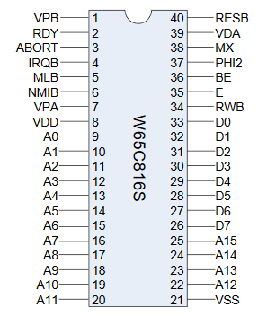

The Neutron Computer Project (read: thing I want to do but cannot) is a computer based around the 65816 microprocessor from Western Design Center.
This is a 16-bit processor that was used in the SNES and it has an 8-bit emulation mode compatible with the 6502.
What about memory and IO?
To discuss this, we need a pinout of the 65816.
